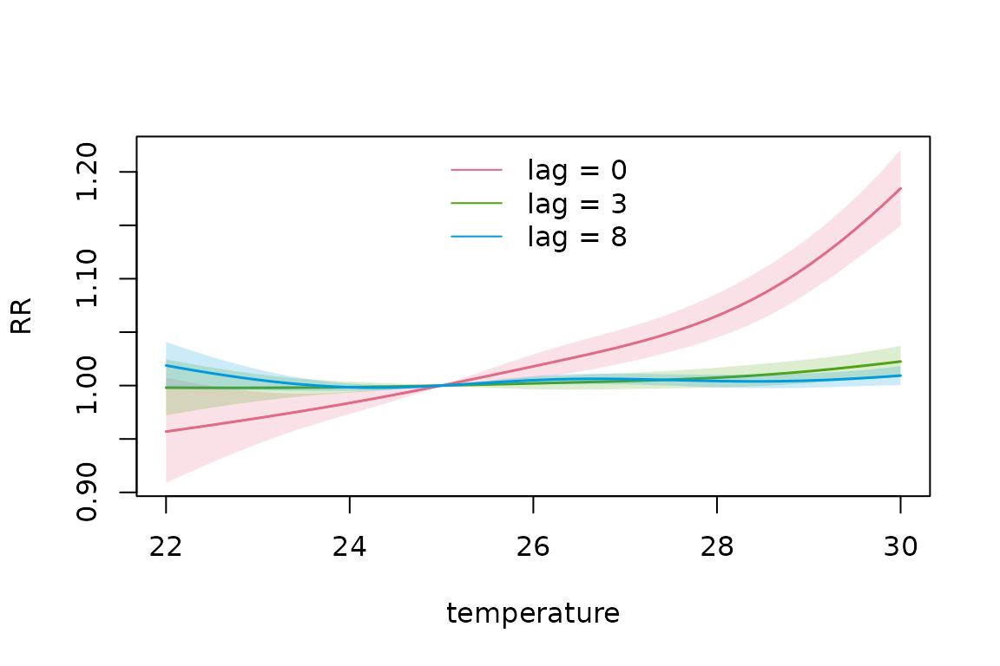
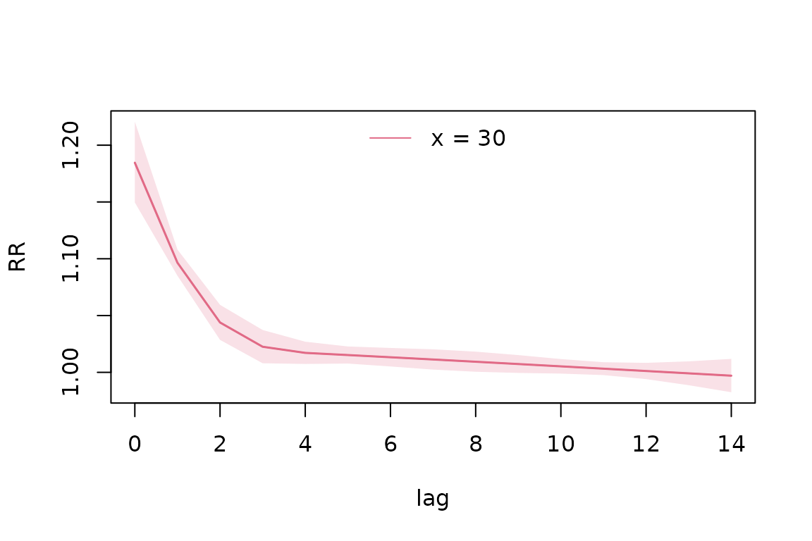
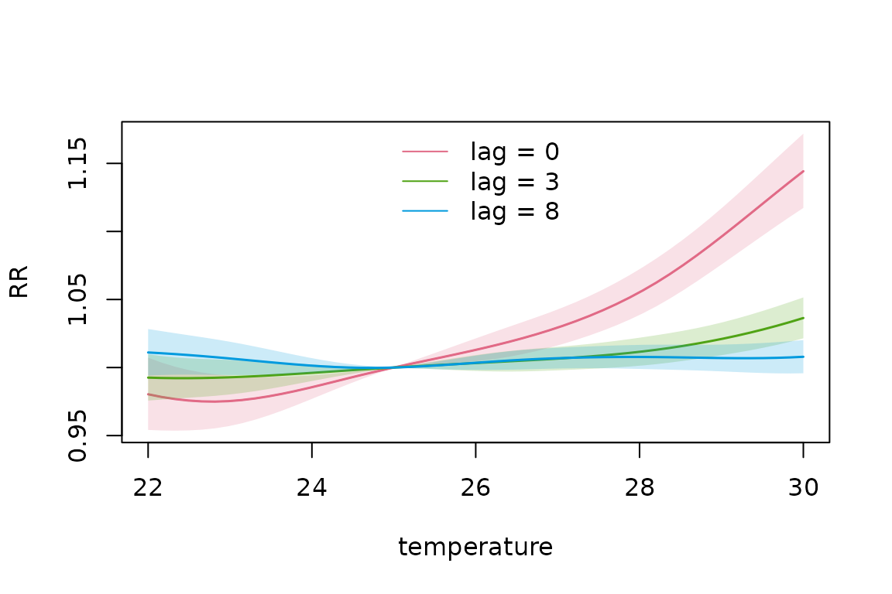
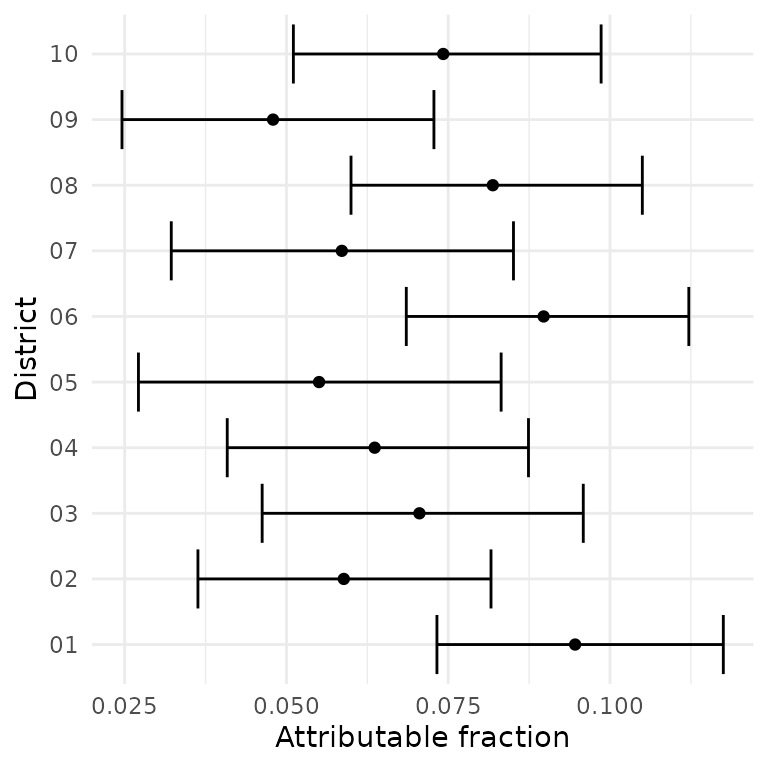
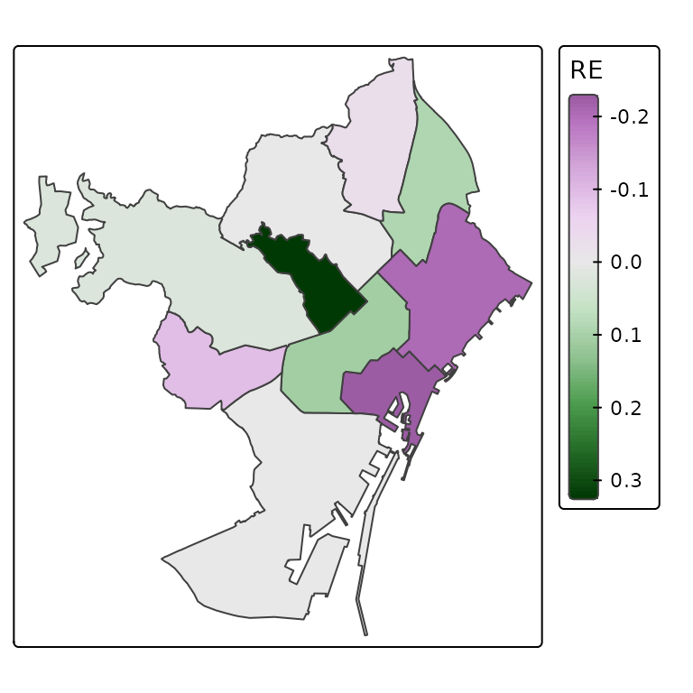
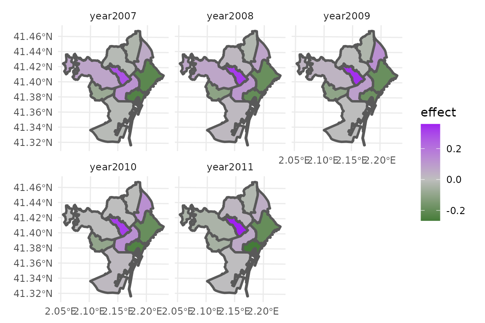

Introduction to dlnmLPS
introduction_dlnmlps.RmdIntroduction
The dlnmLPS package provides tools for fitting
Distributed Lag Non-linear Models (DLNMs) (Gasparrini et al. 2010) within a Bayesian
framework.
DLNMs can require the estimation of a large number of basis coefficients to represent complex exposure-lag-response relationships. Penalized DLNMs provide a very flexible way to model these relationships, while still avoiding overfitting (Gasparrini et al. 2017). However, fitting penalized DLNMs can be computationally demanding because of the large number of model coefficients. Consequently, unpenalized DLNMs are often used in practice.
dlnmLPS addresses this computational challenge by
exploiting Laplace approximations, allowing both unpenalized and
penalized DLNMs to be estimated efficiently within a Bayesian framework.
This approach allows for fast estimation while accounting for
uncertainty in the model parameters.
This vignette provides an introduction to the basic functionality of
dlnmLPS (Rutten et al. 2026).
We first demonstrate how to install and load the package, then fit a
basic DLNM without penalization. We subsequently show how the same type
of model can be fitted using penalized splines.
The more advanced modelling options are demonstrated in separate
vignettes (see vignette("spatially-varying-dlnms"),
vignette("effect-modified-dlnms") and
vignette("joint-dlnms")).
Installation
The development version of dlnmLPS can be installed from
GitHub using:
# install.packages("remotes")
remotes::install_github("Rutten-Sara/dlnmLPS")Basic DLNMs
Overview
A distributed lag non-linear model (DLNM) describes an exposure-response relationship where the exposure can have a delayed effect. The association can be non-linear in the exposure and lag dimension. The two dimensions are represented using spline basis functions.
The following example demonstrates how to fit a basic DLNM using
dlnmLPS.
Example data
For illustration, we use the following simulated example data:
# Example data
data(barcelona_temp)This simulated data set contains daily minimum, maximum and mean temperature in all 10 districts of Barcelona during the summer period (1 June–30 September) between 2007 and 2011. The population size, deprivation index and daily number of deaths are included for every district. For this example, we will investigate the effect of maximum temperature on mortality. The outcome and exposure variable can then be inspected:
# Inspect the data
head(barcelona_temp)
#> date Tmax Tmin Tmean District pop depriv dtot
#> 1 2007-06-01 25.85997 17.93684 21.89841 01 659845.8 1.188957 26
#> 2 2007-06-02 25.71266 17.21590 21.46428 01 659845.8 1.188957 27
#> 3 2007-06-03 25.33624 16.95453 21.14538 01 659845.8 1.188957 23
#> 4 2007-06-04 25.47256 15.42090 20.44673 01 659845.8 1.188957 23
#> 5 2007-06-05 23.89031 16.21367 20.05199 01 659845.8 1.188957 26
#> 6 2007-06-06 24.08012 16.47465 20.27739 01 659845.8 1.188957 18We can extract some additional information from the date such as the day of the week, year and month.
Fitting an unpenalized DLNM
We first fit an unpenalized DLNM. The DLNM crossbasis can be
constructed using the dlnm package. We use natural splines
with three knots in the exposure dimension (on the 10%, 50% and 90%
percentile) and two knots in the lag dimension, equally spaced on the
log scale. We use a maximum lag of 14 days. Population size is included
as an offset.
A crossbasis needs to be supplied within the smooth sm()
function. Since our response is the number of deaths, we use a Poisson
family. Model comparison criteria DIC, WAIC and CPO can also be
requested.
The model can then be fitted as:
# Fit an unpenalized DLNM
knots_temp <- quantile(dataset$Tmax, probs = c(0.10,0.50,0.90))
knots_lag <- dlnm::logknots(0:14, nk = 2)
group <- factor(paste0(dataset$District, "-", dataset$year))
basis.max <- dlnm::crossbasis(
dataset$Tmax,
argvar = list(fun = "ns", knots = knots_temp),
arglag = list(fun = "ns", knots = knots_lag),
lag = 14,
group = group
)
model_unpenalized <- dlnmLPS(dtot ~ sm(basis.max),
data = dataset,
offset = log(pop),
model.comparison = list(DIC = TRUE, WAIC = TRUE, CPO = TRUE),
family = "Poisson")We can include additional covariates in the model. Smooth covariates
need to be supplied within the sm() function as well. The
argument arg can include additional information such as the
type of the component (e.g. “ns” for natural splines, “bs”
for B-splines, “ps” for penalized splines) and any additional arguments
that can be passed to the corresponding spline constructor. In this
example, we include month as natural splines with 3 degrees of
freedom.
# Fit an unpenalized DLNM
model_unpenalized2 <- dlnmLPS(dtot ~ factor(dow) + sm(basis.max) +
sm(month, arg = list(type = "ns", df = 3)),
data = dataset,
offset = log(pop),
model.comparison = list(DIC = TRUE, WAIC = TRUE, CPO = TRUE),
family = "Poisson")Note that type argument of a DLNM-crossbasis is
recognized automatically and hence, does not need to be supplied. The
model output can be inspected using:
summary(model_unpenalized2)
#>
#> Call:
#>
#> dtot ~ 1 + sm(basis.max) + sm(month, arg = list(type = "ns", df = 3)) + factor(dow)
#>
#> Fixed effects:
#>
#> mean sd 0.025quant 0.5quant 0.975quant mode
#> (Intercept) -9.870 0.130 -10.125 -9.870 -9.615 -9.870
#> basis.maxv1.l1 0.001 0.040 -0.078 0.001 0.080 0.001
#> basis.maxv1.l2 -0.052 0.039 -0.128 -0.052 0.024 -0.052
#> basis.maxv1.l3 0.047 0.040 -0.031 0.047 0.125 0.047
#> basis.maxv1.l4 -0.098 0.038 -0.172 -0.098 -0.023 -0.098
#> basis.maxv2.l1 0.005 0.033 -0.059 0.005 0.070 0.005
#> basis.maxv2.l2 -0.077 0.032 -0.140 -0.077 -0.015 -0.077
#> basis.maxv2.l3 0.092 0.033 0.027 0.092 0.158 0.092
#> basis.maxv2.l4 -0.100 0.031 -0.161 -0.100 -0.039 -0.100
#> basis.maxv3.l1 0.029 0.086 -0.139 0.029 0.196 0.029
#> basis.maxv3.l2 -0.229 0.085 -0.396 -0.229 -0.063 -0.229
#> basis.maxv3.l3 0.257 0.086 0.088 0.257 0.426 0.257
#> basis.maxv3.l4 -0.240 0.083 -0.402 -0.240 -0.078 -0.240
#> basis.maxv4.l1 0.003 0.039 -0.072 0.003 0.079 0.003
#> basis.maxv4.l2 -0.131 0.033 -0.195 -0.131 -0.067 -0.131
#> basis.maxv4.l3 0.364 0.040 0.286 0.364 0.442 0.364
#> basis.maxv4.l4 -0.231 0.033 -0.296 -0.231 -0.166 -0.231
#> month1 -0.180 0.013 -0.205 -0.180 -0.154 -0.180
#> month2 -0.186 0.019 -0.223 -0.186 -0.149 -0.186
#> month3 -0.023 0.010 -0.042 -0.023 -0.003 -0.023
#> factor(dow)Monday 0.016 0.012 -0.008 0.016 0.039 0.016
#> factor(dow)Saturday 0.018 0.012 -0.005 0.018 0.042 0.018
#> factor(dow)Sunday 0.020 0.012 -0.004 0.020 0.043 0.020
#> factor(dow)Thursday 0.002 0.012 -0.021 0.002 0.026 0.002
#> factor(dow)Tuesday 0.010 0.012 -0.014 0.010 0.033 0.010
#> factor(dow)Wednesday 0.013 0.012 -0.011 0.013 0.036 0.013
#>
#> Model comparison:
#>
#> DIC: 32612.12 ; Effective Parameters: 26
#> WAIC: 32626.32 ; Effective Parameters: 38.93717
#> sum(log(CPO)): -16313.1The summary shows the function call, estimated coefficients (mean, standard deviation, 2.5% quantile, median, 97.5% quantile and mode) and model comparison criteria.
The exposure-lag-response curve can be predicted for different levels of the exposure variable:
pred_unpenalized <- pred_crossbasis(
basis = basis.max,
model = model_unpenalized2,
at_x = seq(22,30,length = 50),
cen = 25,
lag = c(0,14),
CI = TRUE,
exc.prob = TRUE,
threshold = 0
)In this example, we requested predictions of the relative risk (RR)
of temperature values 22-30, compared to a reference value of 25, over
the entire lag period (0-14). Furthermore, we requested credible
intervals. Exceedance probabilities can be requested through:
exc.prob= TRUE. The threshold used to calculate these
exceedance probabilities needs to be supplied through
threshold, at the scale of the linear predictor. By
default, the threshold is specified to be 0, calculating the probability
that the logarithm of the relative risks exceeds 0:
Although all requested predictions are represented in
pred_unpenalized, retrieving specific parts of these
predictions might require some manual searching. To avoid this, the
wrapper function can be used to easily extract (parts of) these
predictions in one user-friendly data set. For example, if we want to
extract the overall RR predictions for a temperature of 22 and 30
degrees Celsius, we can use ptype = “allRRfit” and:
extract_predictions(pred_unpenalized, slice_x = c(22,30), ptype = "allRRfit")
#> x fit lower upper exc.prob
#> [1,] 22 1.134023 0.9654428 1.332041 0.9371987
#> [2,] 30 1.500423 1.4332011 1.570798 1.0000000Note that credible intervals and exceedance probabilities are also
printed if present in the predictions. To extract the lag-specific RRs
at lag 0 and lag 8 for these temperatures, we can similarly use
ptype = “matRRfit”:
extract_predictions(pred_unpenalized, slice_x = c(22,30), slice_lag = c(0,8), ptype = "matRRfit")
#> x lag fit lower upper exc.prob
#> 1 22 0 0.9569183 0.9089288 1.007442 0.04671869
#> 2 30 0 1.1845835 1.1495812 1.220652 1.00000000
#> 3 22 8 1.0188142 0.9973264 1.040765 0.95671804
#> 4 30 8 1.0093272 1.0005293 1.018202 0.98116491The estimated exposure-response association can also be visualized at
different lags (e.g. 0,3 and 8) using ptype = slices and
slice_lag:
plot(pred_unpenalized, slice_lag = c(0,3,8), ptype = "slices", CI = TRUE,
xlab = "temperature", ylab = "RR")
This plot shows that, while there is an increased immediate risk for
high temperature days, this risk is not visible anymore after three
days. Instead of showing the exposure-response curve at different lags,
we can also show the lag-response curve at pre-specified temperature
level(s) using slice_x:
plot(pred_unpenalized, slice_x = 30, ptype = "slices", CI = TRUE, xlab = "lag", ylab = "RR")
For a temperature of 30 degrees, we can indeed see an increased risk
that diminishes after three days. We can also visualize the cumulative
temperature-mortality relationship (cumulative over the entire lag
period) by specifying ptype= “overall”.
plot(pred_unpenalized, ptype = "overall", CI = TRUE, xlab = "temperature", ylab = "RR")Again, an increased overall risk can be found for high temperatures.
Finally, we can visualize the entire temperature-lag-mortality
relationship using ptype= “cross”. A contour plot can be
requested using:
contour(pred_unpenalized, ptype = "cross", xlab = "lag", ylab = "temperature")While a simple 3D plot can be requested using:
plot(pred_unpenalized, ptype = "cross")additional arguments of graphics::persp can be used to
make the plot more visually appealing:
plot(pred_unpenalized, ptype = "cross", ticktype="detailed", theta=230,
xlab = "lag", ylab = "temperature", zlab = "RR",
ltheta=200,phi=30,lphi=30,
nticks = 4, shade = 0.75,r=sqrt(3),d=5,cex.axis=0.5, cex.lab=0.5,border=NA)Note that credible intervals cannot be requested for 3D plots or contour plots.
Fitting a penalized DLNM
Flexible basis functions can describe more complex
exposure-lag-response relationships, but an overly flexible model can
also result in overfitting. Penalization provides a way to control the
smoothness of the estimated association. In dlnmLPS,
penalized DLNMs are estimated using Laplacian P-splines.
A penalized DLNM can be fitted similarly as an unpenalized DLNM, but
the order of the penalty needs to be supplied in the argument
arg of sm(). Note that, by default, an
additional lag penalty is specified, on top of the P-splines penalties,
to encourage shrinkage towards a null effect at longer lags. To disable
this penalty, specify add.lagpen= “FALSE” within the
arg argument.
# Fit a penalized DLNM
basis.max_pen <- dlnm::crossbasis(
dataset$Tmax,
argvar = list(fun = "ps", df = 8),
arglag = list(fun = "ps", df = 8),
lag = 14,
group = group
)
model_penalized <- dlnmLPS(dtot ~ factor(dow) + sm(basis.max_pen, arg = list(pen = 2)) +
sm(month, arg = list(type = "ns", df = 3)),
data = dataset,
offset = log(pop),
model.comparison = list(DIC = TRUE, WAIC = TRUE, CPO = TRUE),
family = "Poisson")Note that the summary of this model contains additional arguments, which are the estimated hyperparameters (penalties):
summary(model_penalized)
#>
#> Call:
#>
#> dtot ~ 1 + sm(basis.max_pen, arg = list(pen = 2)) + sm(month, arg = list(type = "ns", df = 3)) + factor(dow)
#>
#> Fixed effects:
#>
#> mean sd 0.025quant 0.5quant 0.975quant mode
#> (Intercept) -9.869 0.113 -10.091 -9.869 -9.647 -9.869
#> basis.max_penv1.l1 -0.094 0.060 -0.212 -0.094 0.024 -0.094
#> basis.max_penv1.l2 -0.067 0.034 -0.134 -0.067 0.000 -0.067
#> basis.max_penv1.l3 -0.026 0.026 -0.076 -0.026 0.024 -0.026
#> basis.max_penv1.l4 -0.001 0.022 -0.044 -0.001 0.043 -0.001
#> basis.max_penv1.l5 0.006 0.020 -0.033 0.006 0.046 0.006
#> basis.max_penv1.l6 0.009 0.018 -0.025 0.009 0.044 0.009
#> basis.max_penv1.l7 0.004 0.016 -0.027 0.004 0.036 0.004
#> basis.max_penv1.l8 0.000 0.015 -0.029 0.000 0.030 0.000
#> basis.max_penv2.l1 -0.142 0.078 -0.295 -0.142 0.011 -0.142
#> basis.max_penv2.l2 -0.099 0.037 -0.172 -0.099 -0.027 -0.099
#> basis.max_penv2.l3 -0.025 0.023 -0.071 -0.025 0.021 -0.025
#> basis.max_penv2.l4 0.005 0.019 -0.033 0.005 0.042 0.005
#> basis.max_penv2.l5 -0.005 0.017 -0.038 -0.005 0.028 -0.005
#> basis.max_penv2.l6 0.010 0.015 -0.019 0.010 0.039 0.010
#> basis.max_penv2.l7 0.016 0.014 -0.012 0.016 0.044 0.016
#> basis.max_penv2.l8 0.003 0.015 -0.026 0.003 0.033 0.003
#> basis.max_penv3.l1 -0.120 0.082 -0.281 -0.120 0.041 -0.120
#> basis.max_penv3.l2 -0.057 0.034 -0.123 -0.057 0.010 -0.057
#> basis.max_penv3.l3 -0.017 0.020 -0.057 -0.017 0.023 -0.017
#> basis.max_penv3.l4 -0.008 0.017 -0.040 -0.008 0.025 -0.008
#> basis.max_penv3.l5 -0.017 0.015 -0.046 -0.017 0.012 -0.017
#> basis.max_penv3.l6 -0.011 0.013 -0.037 -0.011 0.014 -0.011
#> basis.max_penv3.l7 0.009 0.013 -0.016 0.009 0.035 0.009
#> basis.max_penv3.l8 0.003 0.015 -0.027 0.003 0.032 0.003
#> basis.max_penv4.l1 -0.073 0.083 -0.236 -0.073 0.089 -0.073
#> basis.max_penv4.l2 -0.041 0.034 -0.106 -0.041 0.025 -0.041
#> basis.max_penv4.l3 -0.016 0.020 -0.056 -0.016 0.024 -0.016
#> basis.max_penv4.l4 0.005 0.016 -0.027 0.005 0.037 0.005
#> basis.max_penv4.l5 -0.005 0.014 -0.032 -0.005 0.023 -0.005
#> basis.max_penv4.l6 -0.008 0.013 -0.033 -0.008 0.016 -0.008
#> basis.max_penv4.l7 -0.009 0.012 -0.033 -0.009 0.015 -0.009
#> basis.max_penv4.l8 -0.004 0.015 -0.033 -0.004 0.026 -0.004
#> basis.max_penv5.l1 0.008 0.082 -0.153 0.008 0.170 0.008
#> basis.max_penv5.l2 -0.007 0.034 -0.073 -0.007 0.060 -0.007
#> basis.max_penv5.l3 -0.008 0.020 -0.048 -0.008 0.032 -0.008
#> basis.max_penv5.l4 -0.011 0.017 -0.044 -0.011 0.021 -0.011
#> basis.max_penv5.l5 0.004 0.015 -0.024 0.004 0.032 0.004
#> basis.max_penv5.l6 -0.007 0.013 -0.032 -0.007 0.019 -0.007
#> basis.max_penv5.l7 -0.015 0.013 -0.040 -0.015 0.010 -0.015
#> basis.max_penv5.l8 -0.002 0.015 -0.031 -0.002 0.028 -0.002
#> basis.max_penv6.l1 0.141 0.081 -0.018 0.141 0.299 0.141
#> basis.max_penv6.l2 0.089 0.036 0.018 0.089 0.160 0.089
#> basis.max_penv6.l3 0.010 0.023 -0.035 0.010 0.055 0.010
#> basis.max_penv6.l4 -0.022 0.019 -0.059 -0.022 0.014 -0.022
#> basis.max_penv6.l5 0.000 0.016 -0.032 0.000 0.032 0.000
#> basis.max_penv6.l6 0.003 0.014 -0.026 0.003 0.031 0.003
#> basis.max_penv6.l7 -0.006 0.014 -0.033 -0.006 0.021 -0.006
#> basis.max_penv6.l8 -0.001 0.015 -0.030 -0.001 0.028 -0.001
#> basis.max_penv7.l1 0.235 0.087 0.065 0.235 0.405 0.235
#> basis.max_penv7.l2 0.139 0.039 0.063 0.139 0.215 0.139
#> basis.max_penv7.l3 0.053 0.026 0.003 0.053 0.104 0.053
#> basis.max_penv7.l4 0.019 0.022 -0.024 0.019 0.063 0.019
#> basis.max_penv7.l5 0.011 0.019 -0.027 0.011 0.049 0.011
#> basis.max_penv7.l6 0.004 0.017 -0.030 0.004 0.037 0.004
#> basis.max_penv7.l7 0.000 0.016 -0.031 0.000 0.031 0.000
#> basis.max_penv7.l8 0.000 0.015 -0.030 0.000 0.030 0.000
#> basis.max_penv8.l1 0.297 0.128 0.046 0.297 0.547 0.297
#> basis.max_penv8.l2 0.146 0.062 0.025 0.146 0.268 0.146
#> basis.max_penv8.l3 0.047 0.039 -0.030 0.047 0.123 0.047
#> basis.max_penv8.l4 0.011 0.030 -0.048 0.011 0.070 0.011
#> basis.max_penv8.l5 0.002 0.024 -0.045 0.002 0.050 0.002
#> basis.max_penv8.l6 0.000 0.020 -0.040 0.000 0.040 0.000
#> basis.max_penv8.l7 0.000 0.018 -0.035 0.000 0.035 0.000
#> basis.max_penv8.l8 0.000 0.016 -0.032 0.000 0.032 0.000
#> month1 -0.180 0.013 -0.206 -0.180 -0.154 -0.180
#> month2 -0.187 0.019 -0.225 -0.187 -0.150 -0.187
#> month3 -0.024 0.010 -0.043 -0.024 -0.004 -0.024
#> factor(dow)Monday 0.012 0.012 -0.011 0.012 0.036 0.012
#> factor(dow)Saturday 0.015 0.012 -0.008 0.015 0.039 0.015
#> factor(dow)Sunday 0.016 0.012 -0.008 0.016 0.040 0.016
#> factor(dow)Thursday 0.004 0.012 -0.020 0.004 0.027 0.004
#> factor(dow)Tuesday 0.007 0.012 -0.016 0.007 0.031 0.007
#> factor(dow)Wednesday 0.013 0.012 -0.010 0.013 0.037 0.013
#>
#> Hyperparameters:
#>
#> Penalty DLNM basis.max_pen 129.18 92.50 74.44
#>
#> Model comparison:
#>
#> DIC: 32605.98 ; Effective Parameters: 25.59731
#> WAIC: 32618.12 ; Effective Parameters: 37.42713
#> sum(log(CPO)): -16308.99Predictions can similarly be visualized:
pred_penalized <- pred_crossbasis(
basis = basis.max_pen,
model = model_penalized,
at_x = seq(22, 30, length = 50),
cen = 25,
lag = c(0,14),
CI = TRUE
)
plot(pred_penalized, slice_lag = c(0,3,8), ptype = "slices", CI = TRUE, xlab = "temperature", ylab = "RR")
plot(pred_penalized, slice_x = 30, ptype = "slices", CI = TRUE, xlab = "lag", ylab = "RR")
plot(pred_penalized, ptype = "overall", CI = TRUE, xlab = "temperature", ylab = "RR")
contour(pred_penalized, ptype = "cross", xlab = "lag", ylab = "temperature")
plot(pred_unpenalized, ptype = "cross", ticktype="detailed",theta=230,
xlab = "lag", ylab = "temperature", zlab = "RR",
ltheta=200,phi=30,lphi=30,
nticks = 4, shade = 0.75,r=sqrt(3),d=5,cex.axis=0.5, cex.lab=0.5,border=NA)
One of the advantages of Bayesian modelling is that uncertainty
quantification can easily be obtained. We already illustrated how to
request exceedance probabilities, but also attributable risks can be
calculated within a DLNM framework (Gasparrini
and Leone 2014). Therefore, the dlnmLPS package
provides the function attributable_risk(). For example, if
we want to calculate the attributable fraction of temperature during the
summer of 2007, using the average maximum temperature and total number
of cases (over all Districts), we can use:
# Calculate exposure and outcome timeseries
data2007 <- dataset |>
dplyr::filter(year == 2007) |>
dplyr::group_by(date) |>
dplyr::summarize(
Tmax = mean(Tmax, na.rm = TRUE),
dtot = sum(dtot, na.rm = TRUE)
)|>
dplyr::arrange(date)
# Calculate attributable risk
af2007 <- attributable_risk(
basis = basis.max_pen,
cases = data2007$dtot,
model = model_penalized,
cen = 25,
x = data2007$Tmax,
dir = "back",
tot = TRUE,
samples = TRUE,
exc.threshold = 0)
# Fit and Credible intervals
af2007$fit$af
#> [1] 0.06620537
quantile(af2007$samples$af, probs = c(0.025,0.975))
#> 2.5% 97.5%
#> 0.04108535 0.08975188
# Exceedance probability
af2007$samples$exc.prob
#> [1] 1Using the backward perspective on attributable fraction
(i.e. dir = "back"), we obtain a total
(tot = TRUE) attributable fraction of 0.07(0.04,0.09). The
probability that this attributable fraction is strictly positive is
requested through exc.threshold = 0, and is equal to 1. We
could also request the forward perspective, using:
af2007_fw <- attributable_risk(
basis = basis.max_pen,
cases = data2007$dtot,
model = model_penalized,
cen = 25,
x = data2007$Tmax,
dir = "forw",
tot = TRUE,
samples = TRUE,
exc.threshold = 0)
# Fit and Credible intervals
af2007_fw$fit$af
#> [1] 0.06273868
quantile(af2007_fw$samples$af, probs = c(0.025,0.975))
#> 2.5% 97.5%
#> 0.03800329 0.08650474
# Exceedance probability
af2007_fw$samples$exc.prob
#> [1] 1Results are very similar. Instead of calculating the total
attributable fraction, using an average temperature timeseries and total
cases, we could also calculate the district-specific attributable
fractions, using the district-specific timeseries and cases. This output
grouping variable can be specified through the argument
group:
# Calculate exposure and outcome timeseries
data2007_district <- dataset |>
dplyr::filter(year == 2007)
# Calculate attributable risk
af2007_district <- attributable_risk(
basis = basis.max_pen,
cases = data2007_district$dtot,
model = model_penalized,
cen = 25,
x = data2007_district$Tmax,
group = data2007_district$District,
dir = "back",
tot = TRUE,
samples = TRUE)These results could then for example be visualized as:
# Extract results
af_ci <- dplyr::bind_rows(lapply(seq_along(af2007_district$samples), function(i) {
x <- af2007_district$samples[[i]]
data.frame(
ID = x$ID[1],
estimate = af2007_district$fit[[i]]$af,
lower = quantile(x$af, 0.025, na.rm = TRUE),
upper = quantile(x$af, 0.975, na.rm = TRUE)
)
}))
# Visualize results
ggplot2::ggplot(af_ci, ggplot2::aes(x = estimate, y = ID)) +
ggplot2::geom_errorbar(ggplot2::aes(xmin = lower, xmax = upper), orientation = "y") +
ggplot2::geom_point() +
ggplot2::labs(x = "Attributable fraction", y = "District") +
ggplot2::theme_minimal()
Some small regional differences can be seen, which could be explained by different district-specific temperature timeseries and cases.
Comparing penalized and unpenalized models
The unpenalized and penalized models describe the same underlying exposure-lag association, but the penalized model allows the smoothness of the estimated association to be controlled through the penalty.
For example, the resulting associations can be compared using model comparison criteria:
Spatial and temporal random effects
Through a smooth function sm(), we can also include
spatial and temporal random effects. An area-specific random effect can
be included independently (type = “ind”) or spatially
structured (type = “Leroux”, type = “ICAR” or
type = “BYM”). In case of spatially structured random
effects, a map with the spatial structure can be supplied through
map within the arg argument. A first or second
order random walk on time can also be supplied through type
= “rw1” or type = “rw2”.
A time-varying spatial random effect or spatially-varying time random
effect can also be requested using the arguments by and
arg.by.
A model with a year-specific random walk of order one and a district-specific Leroux-structured random effect can be fitted as:
# Fit a penalized DLNM with spatial and temporal RW
data(shapefile_bcn)
model_penalized2 <- dlnmLPS(dtot ~ factor(dow) + sm(basis.max_pen, arg = list(pen = 2)) +
sm(month, arg = list(type = "ns", df = 3)) +
sm(year, arg = list(type = "rw1")) +
sm(District, arg = list(type = "Leroux", map = shapefile_bcn)),
data = dataset,
offset = log(pop),
model.comparison = list(DIC = TRUE, WAIC = TRUE, CPO = TRUE),
family = "Poisson")The District-specific random effect can for example be visualized using:
re_index <- grepl("District", names(model_penalized2$xi_mode))
shapefile_bcn$re <- model_penalized2$xi_mode[re_index]
tmap::tm_shape(shapefile_bcn) +
tmap::tm_polygons(
fill = "re",
fill.scale = tmap::tm_scale_continuous(midpoint = 0),
fill.legend = tmap::tm_legend(title = "RE")
)
#> Registered S3 method overwritten by 'stars':
#> method from
#> st_interpolate_aw.stars sf
A model with an independently year-varying Leroux random effect on District, can for example be fitted as:
# Fit a penalized DLNM with temporally varying spatial effect
model_penalized3 <- dlnmLPS(dtot ~ factor(dow) + sm(basis.max_pen, arg = list(pen = 2)) +
sm(month, arg = list(type = "ns", df = 3)) +
sm(District, arg = list(type = "Leroux", map = shapefile_bcn),
by = year, arg.by = list(type = "ind")),
data = dataset,
offset = log(pop),
model.comparison = list(DIC = TRUE, WAIC = TRUE, CPO = TRUE),
family = "Poisson")This can for example be visualized using:
coef_names <- names(model_penalized3$xi_mode)
re_index <- grepl("year", coef_names) & grepl("District", coef_names)
parts <- strsplit(coef_names[re_index], ":")
df_spat <- data.frame(
year = sapply(parts, `[`, 1),
District = sub("District", "", sapply(parts, `[`, 2)),
effect = as.numeric(model_penalized3$xi_mode[re_index])
)
sf_plot <- merge(shapefile_bcn, df_spat, by = "District")
ggplot2::ggplot(sf_plot) +
ggplot2::geom_sf(ggplot2::aes(fill = effect), linewidth = 1) +
ggplot2::facet_wrap(~ year) +
ggplot2::scale_fill_gradient2(
low = "darkgreen",
mid = "grey",
high = "purple",
midpoint = 0
) +
ggplot2::theme_minimal()
Little variation in the Leroux random effect over time can be observed.
Summary
In this vignette, we introduced the basic functionality of
dlnmLPS.
We demonstrated how to:
- install and load the
dlnmLPSpackage; - fit a basic unpenalized DLNM;
- fit a penalized DLNM using Laplacian P-splines; and
- add spatial and temporal random effects.
The next vignettes provide examples of more advanced applications of
dlnmLPS, including spatially varying DLNMs (see
vignette("spatially-varying-dlnms")), effect-modified DLNMs
(see vignette("effect-modified-dlnms")), and DLNMs with
bivariate exposures (see vignette("joint-dlnms")).